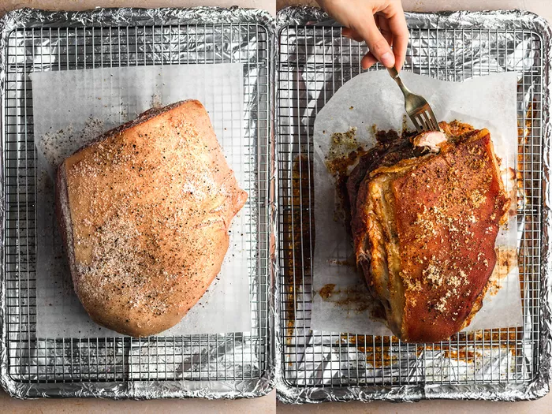

Return Home
Pork Shoulder With Crackling Skin

While the time this recipe takes may seem daunting at first, most of it is inactive
and the results are definitely more than worth the wait!
Equipment:
- sheet tray with wire rack
- aluminum foil
Ingredients:
- pork shoulder
- salt and pepper or any spice rub of your choice
Method:
-
Season your pork shoulder generously with salt and pepper or your spice rub up to 2 days
before you plan on roasting it and let the pork rest in the the fridge
-
Preheat the oven to 121℃ and roast the pork shoulder until it is fork tender, this
should take around 3 1/2 hours per kilo
- Tent the pork with aluminum foil and let it rest for at least 20 minutes and up to 2 hours
- Turn the ovenn up to 260℃ and roast the pork for another 20 minutes, rotating every 5 minutes
- Let the pork rest another 25 minutes before removing serving